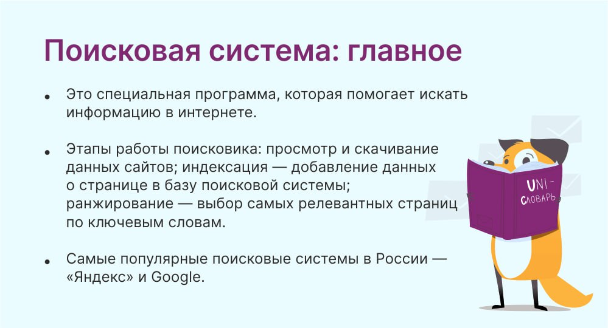
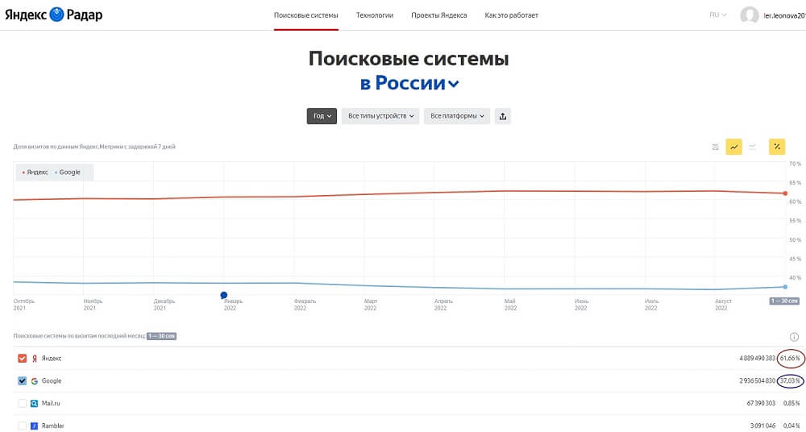
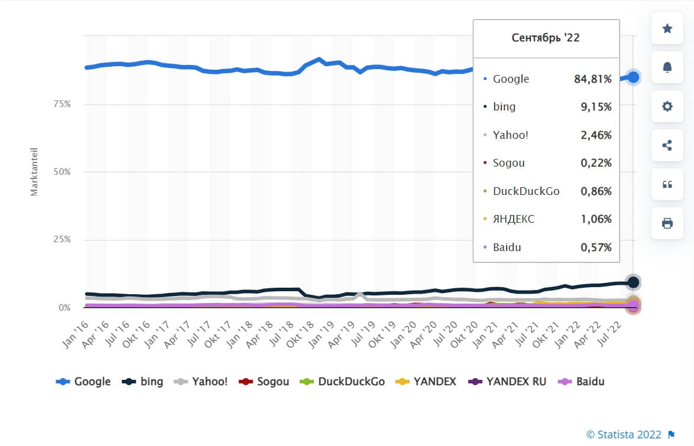

Поисковые системы
Поисковая система (поисковик) — это специальная программа, которая в ответ на запрос пользователя через веб-интерфейс (сайт) выдает список ресурсов, отсортированных по релевантности этому запросу.
Хорошая поисковая система предлагает материалы, которые наиболее корректно отвечают на запрос пользователя. При этом многие поисковики могут искать нужное не только по словам, но и по картинке или голосовому сообщению. Прародителем всех поисковых систем считают программу Арчи — первый инструмент для поиска контента в интернете. Арчи предлагал пользователям архив со списком доступных файлов и возможностью поиска по ним. Лишь в 1994 году появилась первая полноценная поисковая система — WebCrawler, которая стала индексировать не только названия файлов или заголовки страниц, но и их содержимое. А уже через три года, в 1997 году, на рынок вышли привычные нам Google и Яндекс — самые популярные поисковые системы в России, по данным Яндекс.радар. 
Если обратиться к мировой статистике, то здесь лидирует Google (84,8%), а «Яндекс» (1,06%) уходит на 6-е место. 
Зачем нужна поисковая система
Без поисковых систем обычный пользователь вряд ли найдет в интернете нужную информацию, так как без них не будет привычного нам списка сайтов. Придется вручную вбивать адрес каждого ресурса, чтобы проверить, есть ли там то, что вы ищите. К счастью, алгоритмы поисковиков уже знают, какая информация есть на большинстве сайтов, и в ответ на запрос выдают список страниц, которые больше всего соответствуют этому запросу. Кроме того, современные поисковые системы давно вышли за границы обычных поисковиков и превратились в целые экосистемы, которые помогают пользователям решать множество бытовых и бизнес-задач. В том же «Яндексе» есть электронная почта, маркетплейс, онлайн-кинотеатр, такси, доставка еды, карты, различные сервисы для бизнеса, а еще собственная платежная система и знакомый многим голосовой помощник Алиса. 
Этапы работы поисковиков
У каждой поисковой системы — свой алгоритм работы, который держится в строгом секрете. Однако условно весь процесс подбора нужной информации поисковиком можно разделить на три этапа: сканирование (поиск и сохранение страниц), индексация и ранжирование.
Сканирование
Чтобы поисковая система смогла найти нужную информацию в большом количестве сайтов, эти сайты должны быть ей известны, то есть прочитаны и сохранены в памяти.
Поисковая система узнает о содержимом сайтов с помощью специального робота — краулера, или паука. Название происходит от английского crawler (ползающее насекомое, ползунок). Робот обходит все страницы, переходит по ссылкам и постепенно охватывает миллиарды веб-страниц в сети, сохраняет их и отправляет на индексацию.
Индексация
Следующий этап — подробный анализ загруженных страниц и добавление информации о том, какие сведения в них содержатся, в базу поисковой системы (создание индекса).
Индексный робот разбивает каждую сохраненную страницу на части (заголовки, текст, ссылки, теги html и т.д), изучает их содержимое, переваривает и структурирует. В результате получается упорядоченный список адресов страниц и размещенной на них информации.

Пока страница не проиндексирована, для поисковика она не существует. Поэтому важно, чтобы сайт был открыт для индексации. При необходимости можно закрыть от поисковых роботов отдельные страницы, например личный кабинет и корзину, чтобы они не попали в выдачу.
Ранжирование и поисковая выдача
Когда человек вводит запрос в поисковую строку, поисковик выбирает все страницы, которые имеют отношение к запросу, прогоняет их через свои алгоритмы и выдает список сайтов в определенном порядке. При этом чем выше сайт оказался в выдаче, тем лучше он соответствует запросу пользователя и требованиям поисковика. Процесс сортировки сайтов по определенному списку критериев называется ранжированием. На результаты ранжирования влияет релевантность контента запросу, качество и удобство сайта, его технические и пользовательские характеристики и многое другое. Точный список критериев поисковые системы держат в секрете и постоянно обновляют свои алгоритмы. По итогам ранжирования можно получить разные результаты поисковой выдачи:
- в разных поисковиках, так как используются различные критерии фильтрации;
- в разных регионах, так как в запросах учитывается местонахождение пользователя;
- на разных устройствах — в десктопной и мобильной версии, так как имеет значение удобство использования сайта на разных устройствах;
- по одинаковым запросам у разных пользователей, так как учитывается индивидуальная история поиска.
Ранжирование позволяет пользователям быстрее получить нужную и достоверную информацию, а компаниям использовать поисковую выдачу для продвижения своего сайта.
Альтернативные поисковые системы
Большинству поисковых систем далеко до Яндекса и Гугла, и все же некоторые из них могут быть полезны в той или иной ситуации. Вот несколько примеров поисковиков, которые ориентируются на определенную нишу или предлагают больше конфиденциальности.Не только Яндекс и Google: 7 альтернативных поисковых систем DuckDuckGo — поисковая система с открытым исходным кодом. Не собирает и не хранит данные о посетителях, а значит, обеспечивает максимальную конфиденциальность своим пользователям. Кроме того, Google и Яндекс стремятся персонализировать выдачу и учитывают предпочтения посетителя. В DuckDuckGo такого нет, поэтому поисковая выдача получается чуть более объективной. Например, через поисковик удобнее искать информацию на иностранном языке. FindSounds — поисковик по звукам. Можно ввести текстовый запрос или загрузить образец. Запросы на русском не поддерживаются, но есть большой список русскоязычных тегов. Можно уточнить запрос, выбрав желаемый формат и качество звучания. Легко найти рев леопарда, жужжание осы, тикание часов и даже звук дыхания Дарта Вейдера. Все найденные звуки доступны для скачивания. BoardReader — поиск по форумам, сервисам вопросов и ответов и другим сообществам. Специальные настройки помогут быстро найти посты и комментарии, которые соответствуют заданным критериям: языку, дате публикации и названию сайта.
Главные мысли
.png)